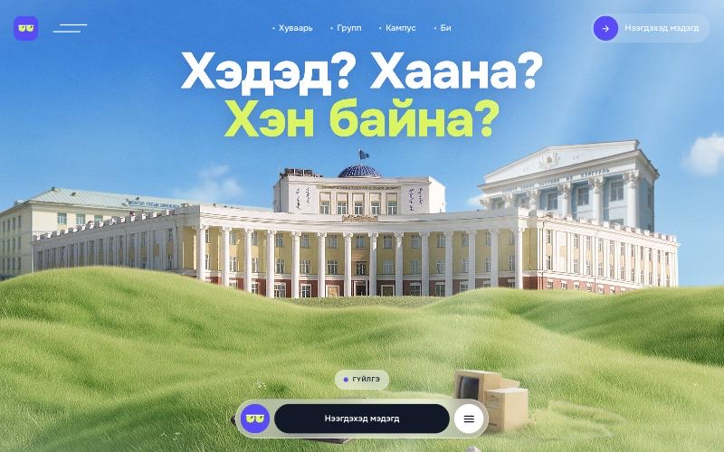
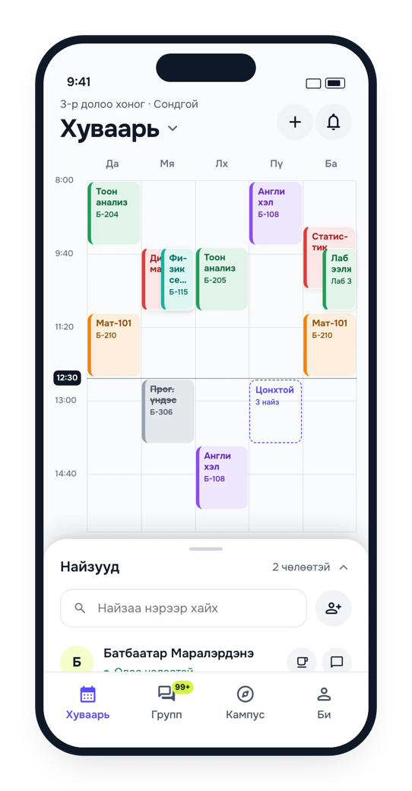
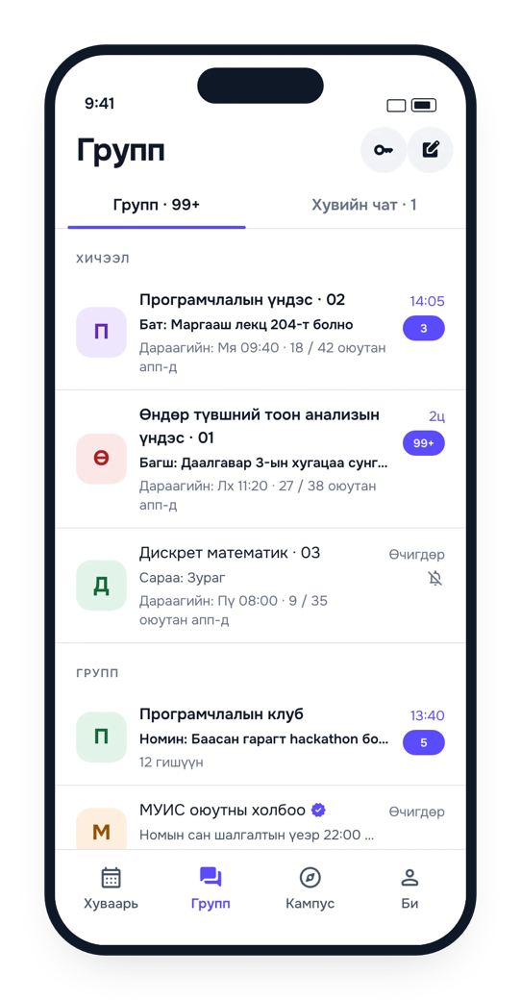
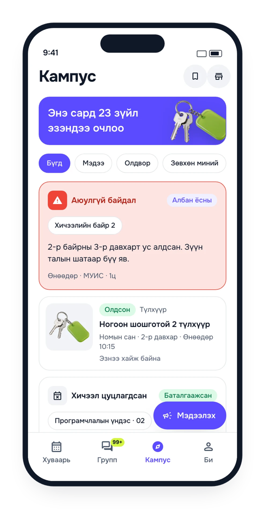
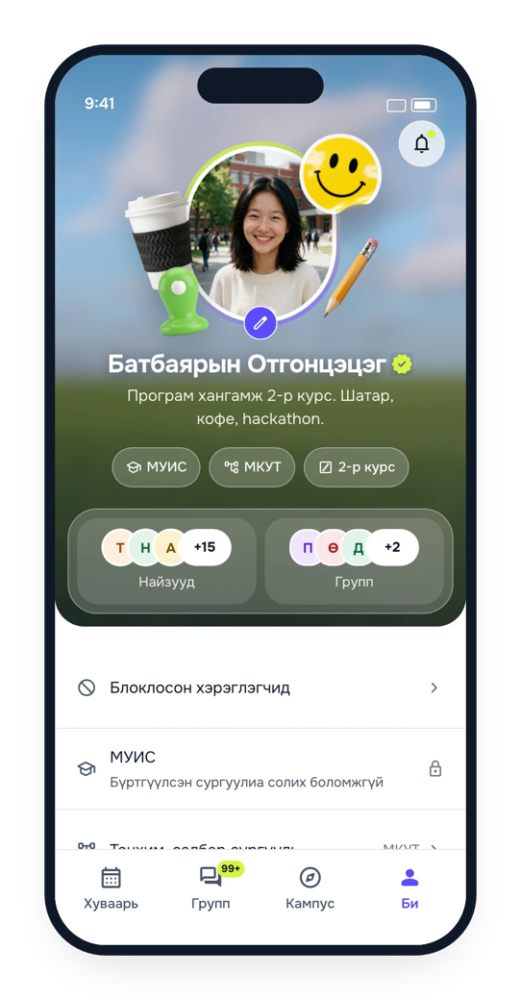

Kuul
Side project, 2026
Хэдэд? Хаана? Хэн байна? When, where, and who is around. Kuul is the app that knows a Mongolian university student’s week and which friends are free right now. I started it in September 2026 and built it end to end, so this page covers the research and the data as much as the screens.
Three questions
There are 161,891 university students in Mongolia and about 94 percent of them are in Ulaanbaatar.1 Every September roughly 26,000 new ones arrive. I watched them ask the same three questions several times a day. When is my next class. Where is it. Which of my friends is free.
Today those questions go to a Facebook group and a Messenger chat, and I have sat in enough of those groups to know how the answers arrive. NUM’s official student app has a 3.2 star rating and the review I kept coming back to said nothing works when it is time to use it. No school app knows your friends. No Facebook group knows your timetable. The gap I wanted to fill was the one thing a group cannot do, which is to know who is a student, where, and when they are free.

I wrote the market report first, before any screen. It made six decisions and the one that shaped everything else was the wedge. The timetable is useful to one student alone, and it gets better with every friend who adds theirs. That is a referral loop built into the product rather than bolted on. Chat, groups, campus news, a marketplace, all of it sits on top of the timetable and in that order.
I also looked hard at what happened elsewhere. Everytime in Korea reached 3.4 million monthly users in a country with 3 million students and spent nothing on marketing. Super Timetable in China imported timetables with students’ portal passwords, got banned by universities and was delisted. Saturn in the US let strangers see minors’ schedules and paid a $650,000 settlement. I wanted the first path and I designed the rules to make the other two impossible.
A campus app at 5 percent penetration is dead. At 60 percent it is infrastructure. So the launch plan is one faculty at a time, never the whole country at once.
Timetables without a password
The hardest problem in the plan is getting a student’s timetable into the app legally. The tempting shortcut is to ask for their portal login and scrape it. I ruled that out on the first page. Mongolia’s Criminal Code treats unauthorised access to information systems as a crime, and it is exactly how Super Timetable died. So I built a ladder of sources instead, from the one that works today to the ones that need a partnership.
| Tier | Source | Who it covers | State |
|---|---|---|---|
| A | NUM open data, a CKAN portal with a live WebAPI, CC-BY-SA | NUM, 10 schools | Importing nightly |
| B | Public weekly grids and workbooks that need no login | MUST School of ICT, UFE | UFE file import built |
| C | The student’s own hand: a course picker, or a screenshot of their own timetable | Every school, day one | Picker built, OCR waiting on a vendor |
| D | A share button inside the three vendors’ portals, exporting the student’s own data | 30 or more private schools | Conversations |
| E | University and ministry data agreements | Everyone | Year two |
Tier A is why I put the pilot at NUM. The university publishes its timetable as open data, and in May 2024 it ran a hackathon asking students to build on it. The market report said the endpoint timed out. I checked from Ulaanbaatar and it did not. It only times out from abroad, which is the kind of thing you learn by hitting the endpoint yourself instead of trusting a document.2
What I got back was 7,112 weekly meetings for the semester, across 10 schools, 66 departments and 1,719 courses. And a problem. The timetable rows carry no course code, no group label, and every identifier is an MD5 hash. On its own a row says a course with a hashed id meets on Tuesday at 11:00 in a hashed room. To make it mean anything I had to find the sibling datasets and join them.
The course package gave me the code and the names, and 94 percent of rows matched. The rooms package gave me buildings and seats, 97 percent. The organisation tree gave me the school and the department a row belongs to, which is what the picker is organised by. The rows that did not match keep the timetable’s own course name and a generated code, so nothing is thrown away.
One field never made it in. Each row carries the instructor’s personal identifier, and under Mongolia’s personal data law that is personal data. I made the importer drop it at parse time and keep only the display name, with an opt-out flag per instructor. The staff register, about 2,000 names and emails, is on the same portal and I decided not to fetch it at all.3
One row, one section
The second problem I hit was structural. My data model, written in the product requirements before I saw the real data, had a Course, a Section with a group label, and Meetings belonging to the section. NUM publishes no group labels. A course with one lecture and two seminar rows shows the same enrolled count on all three, so I could not even infer the groups from the numbers.
I could have guessed. I decided guessing would be wrong more often than right, and wrote the decision down. One timetable row becomes one section with exactly one meeting. The section’s label is generated from what the row does know.
| The row says | The section becomes |
|---|---|
| Семинар, Мягмар, 11:00 to 12:30 | Семинар · Мя 11:00 |
| Лекц, Даваа, 08:00 to 09:30 | Лекц · Да 08:00 |
| frequency: 2 долоо хоног тутам, first date in week 3 | week parity odd |
| frequency: 7 хоног тутам | every week |
| same row next semester, new room | version bumped, a system alert to everyone who has it |
The picker then groups sections by course, then by type, and nudges a student to choose one lecture plus one of each other type. Auto-groups form per section, so the lecture group holds the whole cohort and a seminar group holds its twenty people, which is how classes feel in real life. The cost is honest too. Two seminar rows that are really the same group show up as two sections. If NUM ever adds a group field, merging them is a migration, not a redesign.
The same model took a very different source without changing. A student at the University of Finance and Economics sent me the university’s semester workbook, one spreadsheet for the whole bachelor day programme. The importer read 741 classes, 236 courses and 724 groups out of it and rejected nothing. That was the moment I trusted the model.
Who is free right now


I made the timetable the home screen, and the one button on it that matters is Хэн чөлөөтэй вэ, who is free. I query friends’ meetings for a window, now or a chosen time, and list them sorted by how long they stay free. Чөлөөтэй 14:30 хүртэл. Tap one and you get a message with a suggested place. The slot finder does the same for a group, two to eight friends, thirty to a hundred and eighty minutes, and one tap turns the slot into a group with the time pinned.
I made privacy a setting, not a policy page. A student chooses whether friends see their full timetable, only the busy blocks, or nothing. Custom private entries always render as Завгүй, busy, whatever the setting. Blocked people never appear in a who’s free result, and I wrote a security test to make sure a blocker’s schedule cannot be inferred from any endpoint.
The rule I like most is that a cancelled class counts as free time. When three classmates confirm the 08:00 lecture is off, it is struck through on everyone’s week and those ninety minutes show up in who’s free, labelled so you know why.
Each course group also says how many classmates are already in the app. 18 / 42 оюутан апп-д. That line is the launch plan made visible. A student sees real local proof of who is here, never a national download count, and an invite to the other 24 has an obvious reason.
Trust without a wall
Saturn’s settlement taught me that a timetable app with weak student verification is a safety problem, and Everytime’s anonymous boards taught me where a campus feed goes when nobody is accountable. My answer is a ladder of trust that starts open and tightens with each social action.
- Guest
- Pick a university and a school and you are on the timetable builder in ten seconds. No account. Public alerts and lost and found are readable too.
- Registered
- The first social action, adding a friend or sending a message, opens the sign-up sheet. Phone, code, name, birth date, a three-bullet consent screen. Under sixty seconds.
- Verified
- A university email and a magic link, or a photo of the student ID reviewed by a person within a day. The badge reads Баталгаажсан оюутан · МУИС · 2027 хүртэл.
- Official
- Faculty offices and the student union, created by us after a signed agreement. Their alerts push immediately with a blue badge.
I treat verification as a badge, never a wall. Every empty state says in one line what verifying unlocks, and that is all it says. Kuul is 16 and over and the server refuses an earlier birth date. Under 18, a guardian ticks the consent as well. The consent names where the data lives, because the server is in Japan and the law says a student should know that.


I gave the campus feed the same shape. Anyone in scope can report that a class is cancelled or a room has changed. The report sits in the feed with a grey Баталгаажаагүй label and sends no push. When three verified students in that section tap Үнэн, it is confirmed, everyone in scope gets the push, and the timetable overlay appears. Three Худал votes outnumbering confirmations two to one mark it false and retract the push with a correction. A reporter’s score goes up with confirmed alerts and down three with false ones, and below minus five their alerts wait for a moderator. I did not want to build a rumour machine, and the status ladder is how I avoided it.
Cool, with sunglasses
Күүл is student slang for cool, and the double uu in the middle is a pair of sunglasses. The logo lives inside the name, so the brand never needed a mascot. Everything else about the identity I derived from the logo book: four colours, one typeface, flat fills, no gradients anywhere.

Two letters made the typeface decision for me. Ө and Ү are in every Mongolian sentence and most display faces do not have them. Onest does, in every weight, so Onest is bundled with the app and the landing page serves it from its own folder rather than from Google Fonts, whose copy is missing both. The voice is one student talking to another, informal singular, numbers over adjectives. 60 секундэд, 3 найз чөлөөтэй. No emoji. The shades in the wordmark are the only face the brand gets.
I kept the UI rules short and strict. Pill controls, 20 pixel cards, 28 pixel sheets. Each course in the week is a tinted card with a vivid four pixel left bar and matching text, five colours, every pair above 4.5 to 1 and inverted in dark mode. Free slots are dashed outlines, negative space, like the bridge in the logo. Red is for errors and never touches the mark.
Four programs in three weeks
I built all of it. My market report is dated 12 September. I verified the NUM data on 17 September. I wrote the plan and the import model on 21 September, and deployed the API, the moderation console and the Flutter app on the 23rd. Then I designed the full visual system and moved the app onto it screen by screen while I kept shipping features underneath.
- The server
- Fastify with Zod schemas, so every request is validated and the same schema writes the API docs. Drizzle on PostgreSQL. Phone login, the nightly NUM import, friends and who’s free, groups and chat over WebSocket, alerts, lost and found, moderation. 332 tests in 37 files.
- The app
- Flutter, because it draws a dense week grid smoothly on a 2021 Redmi and because it is what the local banks ship with. Six feature areas, 780 Mongolian strings, offline timetable, a shake to add the friend next to you.
- The console
- React. Twelve pages for the verification queue, reports, alert moderation, official accounts, keyword lists, the catalogue and an audit log.
- The pipeline
- Jobs inside the server. Each night it reads NUM’s timetable, joins it, and writes sections a student can tap. A re-run updates in place and raises a system alert when a room or time changed for a section students already have.
Two decisions I made early kept the build small enough for one person. TypeScript for the server and the console, Dart for the app, and nothing else, because nobody building alone should juggle four languages. And an embedded PostgreSQL for laptops, so one command starts the whole system and the tests run against a real Postgres engine in memory. Real SMS, push and email sit behind interfaces with development stand-ins, so the switch to production providers is a line in a config file.
I wrote the rules for the codebase into the repo, after I broke things. One screen per branch. Same job, same control, even when the design shows something else. Migrating a screen changes how it looks, never what it does. Run against the real server to check with real data, and look, don’t post, because the posts reach real students.
Where it stands
I launch Kuul in the first week of the spring semester, February 2027, in a pilot faculty at NUM and at the MUST School of ICT. I made the targets specific because I made the kill criteria specific too. Move to the next faculty when 60 percent of this one has a timetable in the app, half the active users have three friends linked, and a quarter are still here after thirty days. Stop and rethink if, eight weeks after a real launch, penetration is under 30 percent or verification completion is under 60.
What I am proudest of is not a screen. It is that a product with chat, personal data, minors and campus-wide push notifications was designed from the first page to never hold a password it does not need, never store an identifier it does not use, and never push a rumour. The screens are the easy part. The rules are the product.
- Market figures are from the 2025 to 2026 higher education statistics and the sources listed in my market report. Where I could not find a primary source, the report marks the number as an estimate, and I have left those out here.
- The portal also turned out to be a semester behind. Two weeks into the 2026 autumn term, the current-semester endpoint still returned 2025 autumn. Freshness, not access, is the real risk with Tier A, and it is a conversation with NUM’s student development centre rather than an engineering task. For the demo I shifted the real 2025 snapshot forward one year.
- While checking the portal I also looked at bagsh.space, a schedule builder listed on NUM’s open-data portal. Its live data carries raw integer ids that the open data does not expose, so it has a fresher feed than the public API. I noted that as a conversation to have with its founders, not as a competitor.